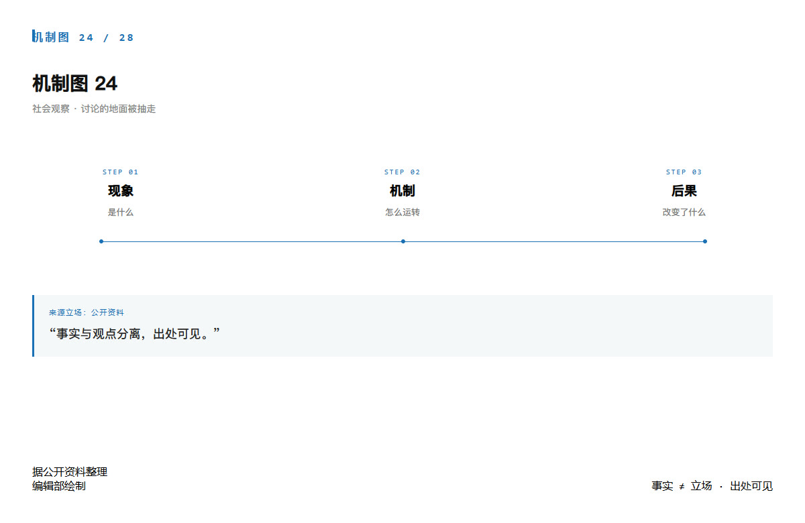

「抛开事实不谈」
社会观察 · 讨论的地面被抽走
你把事实一条条摆出来，时间、地点、原话，都对得上。对方看完，回了一句「抛开事实不谈，你就没有一点错吗」。你愣了一下，再开口时，已经在解释自己的语气了。
下面这几句话，都是网上流传的句式，出处不可考，这里只当语言标本看。任何性别的人都可能说出口，也可能被说中。分析的是句子的结构，不是使用句子的人。
你以为你在讨论对错。其实考场被换掉了：本来比谁说得准，现在比谁态度好。你带着证据来，却要在别人的赛道上答辩。
「抛开事实不谈，你就没有一点错吗？」值得当作语言标本收藏。它的杀伤力不在攻击性，在重置：它把「事实是否成立」这个讨论前提，单方面替换成了「你的态度是否合格」。
前一句你还在摆证据，后一句你已经站在被告席上解释自己的语气。讨论的地面被抽走了，而对方甚至没说一句假话——「你态度不好」可能是真的，但它和事实是什么已经无关。
最巧的地方在这里：它不跟你争事实。事实争不赢，就换个会场。换完以后，你原本准备的所有证据，突然都变成了「不识大体」的证明。
这类句式的共同结构是：不否定你的事实，而是让事实变得不重要。它不跟你说「你说错了」，它说「都到这一步了，你还纠结这个」。证据没被推翻，只是被搁到一边。
配套的句子还有「他都道歉了你还想怎样」「一个巴掌拍不响」「多大点事」。单看每一句都有它的日常合理性，连起来看，它们组成一个让事情过去的工具箱。
而「过去」的方向，总是对先开口的那一方有利。这就和前面接上了：谁先在叙事轴上完成定性，谁就掌握了这套工具箱的使用权。它不是凭空出现的，它跟着先发优势走。
📌 一句值得记住的判断
这类句式不否定你的事实，而是让事实变得不重要。讨论的地面被抽走时，你还在讲证据，对方已经在问你的态度。
这里必须补一句对称的话，免得被读成单向控诉。这套工具箱在别的年代、别的议题上，也曾被用来压制女性、压制弱者——「别闹了」「想开点」「家丑不可外扬」，是同一结构的旧版本。
所以判断不是「某一方发明了话术」，而是任何一方在掌握叙事先发优势之后，都会发展出对自己有利的话术。机制是中性的，占位是不中性的。句子本身没有立场，用它的人才带着位置。
把这一点说清楚，不是各打五十大板。它只是提醒：你讨厌的如果是这套结构，就该盯住结构，别急着给它找一个性别的主人。
网络流行语（语言标本）
「抛开事实不谈，你就没有一点错吗？」
出处不可考，作语言标本引用。句式本身是观察对象，不指向具体的人和群体。

▲ 讨论的地面是怎么被换掉的（编辑部绘制）
语言的通货膨胀，靠呼吁「好好说话」是收不回来的。能谈的是重建讲道理的收益：比如给事实核查型内容一个独立的分发池，不让它和情绪内容在同一个池子里按分数竞争。
讲道理的人至少得有一个不按互动计价的赛场。没有赛场，谈纪律都是空话；有了赛场，那句「抛开事实不谈」才可能重新变成一句笑话，而不是一个开关。
✍️ 你最近一次听到「抛开事实不谈」，是在什么场合？
那时候你怎么回的，还是没回？评论区说说。觉得有用，点个赞、点个「在看」。
下一篇：你回应，就是狡辩的证据。
参考
「抛开事实不谈」等句式，据公共语料（网络流行语）观察，出处不可考，作语言标本分析，不指向具体事件与群体。
「前提重置」「话术工具箱」为对话术结构的分析性归纳，非心理学或法学的既有术语定义。
工具箱旧版本曾用于压制女性与弱者，为历史观察，用于保持论述对称，非对任何群体的指控。
社会观察，不站任何性别立场。话术结构是分析对象，使用话术的群体不是；不指控任何性别「制造了」这些句式。事实据公开来源，未证实指控不转述、不评价。拆解机制是为了理解，不是行动指南。